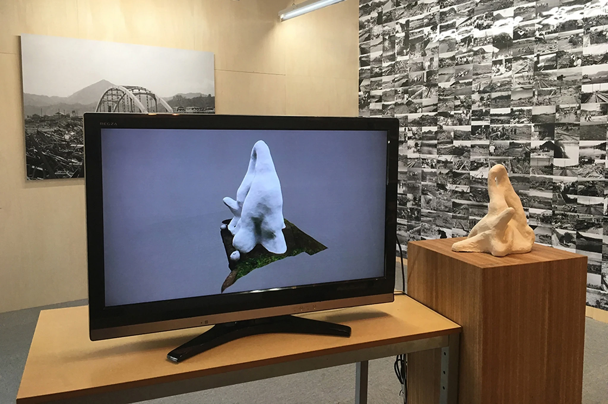

Photo Exhibition — Typhoon and Order
October 17 – November 3, 2018 / Studio 35 Minutes
Curated by Mitsuhiro Wakayama / Manami Uetake / Takeshi Hyakuto / archival photographs of the Kanogawa Typhoon

Chroniclers of Water (2018) was held at the Kano River Museum sixty years after the 1958 Kanogawa Typhoon. Survivor interviews and archival photographs digitized for the project reconsidered a disaster still remembered in Izu but receding into history. The museum itself held extensive records of the typhoon yet was little known even locally. Cliff Edge Project organized the exhibition; Takuya Isomura, Yusuke Suzuki, and I produced the video, Aya Suzuki composed the music, and Hideki Ishii, Kazuo Kogure, and Keiji Matsumoto appeared as people who had experienced the typhoon.
At the center was a 31-minute interview with Matsumoto, who had watched the flood from higher ground in Kumasaka and long hesitated to call himself a “victim” because his house was not washed away and he had not even been wet. His testimony was shown with archival photographs, a brick from the washed-away Ohito Bridge, a replica and 3D data of the Yuai no Zo memorial, and ladders recalling improvised crossings during the flood. During the exhibition, Matsumoto also stood in the museum and spoke directly with visitors.
Related programs included Mitsuhiro Wakayama’s photo exhibition Typhoon and Order and the talk “Art Updates Disaster History.” The project’s method shifted from geological and civil-engineering traces toward an individual’s memory and silence, making the question of how an outsider can approach disaster experience central to later work.
《水のかたりべ》（2018年）は、1958年の狩野川台風から60年となる年に狩野川資料館で開催した。台風体験者への映像と、展示のためにデジタル化した被害記録写真を中心に構成した。会場は、台風資料を蓄積しながら地域でも十分知られていなかった狩野川資料館。企画はCliff Edge Project、映像制作は磯村拓也・鈴木雄介・住康平、音楽は鈴木彩、出演は石井英樹・小暮一夫・松本圭司である。
中心は熊坂で洪水を高台から目撃した松本圭司への31分のインタビューだった。自宅が流されず自身も濡れなかった松本は、自らを単純な「被災者」として語ることにためらいを抱えていた。その語りを、記録写真、大仁橋の橋脚煉瓦、熊坂小学校《友愛の像》のレプリカと3Dデータ、洪水時の移動を想起させる梯子などと並置した。会期中には松本自身も会場に立ち、来場者と対話した。
関連企画として若山満大の写真展《台風と秩序》とトーク「アートが災害史をアップデートする」を開催した。ここで焦点は土地に残る地質・土木の痕跡から、個人が抱える記憶と沈黙へ移り、災害の外部にいる者が当事者の経験へどう近づくかが以後の課題となった。
October 17 – November 3, 2018 / Studio 35 Minutes
Curated by Mitsuhiro Wakayama / Manami Uetake / Takeshi Hyakuto / archival photographs of the Kanogawa Typhoon
November 17, 2018 / Kano River Museum
Lecture: Mitsuhiro Wakayama / Panel: Kohei Sumi, Keiji Matsumoto, Mitsuhiro Wakayama / Moderator: Masahiko Hirano
2018年10月17日 – 11月3日 / スタジオ35分
企画：若山満大 / 参加：上竹真菜美、百頭たけし、狩野川台風記録写真
2018年11月17日 / 狩野川資料館
講演：若山満大 / パネル：住康平、松本圭司、若山満大 / 司会：平野雅彦
“Chroniclers of Water — Bridges, Ladders, and the Buried Kanogawa Typhoon”
ART iT, December 29, 2018
「『水のかたりべ』展—橋と梯子、埋もれた狩野川台風」
『ART iT』2018年12月29日